JS13kGames 2018
August-September 2018
Intro
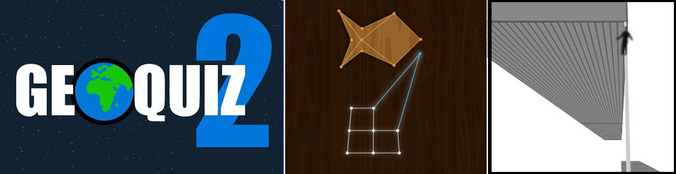
During this compo, I challenged myself to develop three games:
a sequel to my 2015 entry Geoquiz,
a reboot of the puzzle game envelope
and a funambulism VR mini-game called Man on Wire.
The development of these games is detailed below.
TL;DR:
- GeoQuiz 2 is playable HERE (source code HERE)
- Envelope is playable HERE (source code HERE)
- Man on Wire is playable HERE (source code HERE)
- Tools developed during this compo (I didn't use all of them):
- js13k-path
- int2binary2html
- MiniMusic v2
- MiniPixelArt
- twemoji-webfont
- SVGenerator
- CSS3D
- Gyro
- Terser-online
Results:
- Geoquiz 2 was ranked 18th on mobile, 80th on desktop, and 16th in the community vote
- Envelope was ranked 6th on mobile, 45th on desktop, ad 48th in the community vote
- Man on Wire was ranked 13th on WebXR and 48th in the community vote
Geoquiz 2
Before the compo
This summer, I thought about my 2015 entry Geoquiz... especially its World map:
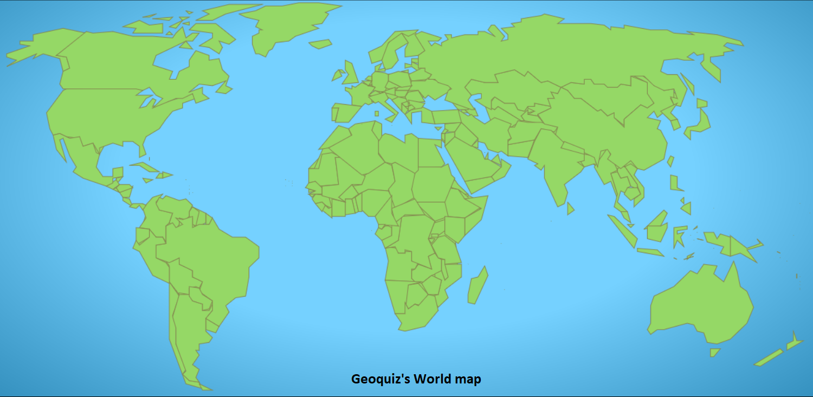
- All the map data was stored in a binary file aside index.html, and requested with an XHR call.
- All the polygons were traced from a starting point (encoded on 2 bytes, one for X and one for Y) and for each new point, a pair of tiny, signed X and Y offsets was encoded on 1 byte (4 bits for each offset).
- The game's zip was 11.9kb (5.3kb for the binary file, 3.2kb for all the places' names and 3.4kb for the code and the music)
- I could have used the free space to redraw the map with more details and less gaps between the countries, but never found the time or motivation to do it.
... Anyway, I wondered if this entry could have been optimized even more.
I first tried converting the binary file to base64 and placing it directly inside index.html. The zip instantly lost nearly 200 bytes, and the XHR call wasn't necessary anymore!
Kids, if you need to save bytes for js13k, put all all your code and assets (images, sounds, binary, ...) inside index.html!
I also recompressed the entry with AdvanceComp's tool advzip, which removed another few hundred bytes (the total was around 11kb).
Kids, always recompress your entries with advzip!
For the record, the magic command line is: .\advzip.exe -z -4 -i 1000 .\entry.zip
(if you need to squeeze a few extra bytes, replace 1000 by a bigger number, like 50000, but it'll take more time to process.)
Then I imagined using "polar offsets" instead of X/Y offsets for each new point of a polygon, and tried keeping the total under 7 bits (to encode each point in an ASCII char) by using 3 bits for angle and 4 bits for distance.
Here's a test with the Brazil, encoded on 38 chars, then reduced to 21 chars (for the record, it took 74 bytes in my 2015 entry):
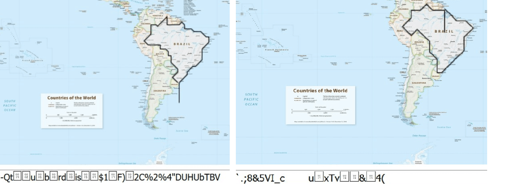
It was pretty cool, but not comfortable to draw: there was too few freedom for the angles (only 8 possible values), and the result was visibly degraded because of this limit.
So I changed that, and instead, used 4 bits for the angle and 3 bits for the distance.
This lead to the release of my tool: js13k-path
#js13k path tracer v0.2:
— xem 🔵 (@MaximeEuziere) 26 juin 2018
- The canvas can be as big as 2048px * 1024px
- The first point of the path is encoded on 3 ASCII chars
- each new point is encoded on 1 ASCII char (4 bits for angle, 3 bits for distance, distance is a multiple of 4 between 4 and 32) pic.twitter.com/xn09Ve4jpa
As you can see in this tweet, at first, I encoded the start coordinates on 3 ASCII chars (11 bits for X and 10 bits for Y), but it was unnecessarily complicated. Instead, I encoded each coordinate on 1 byte (i.e. a number ranging from 0 to 255), and converted them in characters like the rest of the polygons.
Problem: if they were converted to (UTF-8) chars like the rest of the polygons, every value higher than 127 would bacome a non-ASCII char and take 2 bytes, which is not optimal!
Solution: either use a binary file, or encode all chars in another encoding, like Latin-1!
So I unearthed some compression tricks I had seen and used before (in Zpng and JSciissors), and I worked on a tool allowing to easily store binary code directly inside index.html. I came up with 3 different solutions, and I compiled them in a single tool: int2binary2html
🚀New tool for #js13kgames 2018:
— xem 🔵 (@MaximeEuziere) 1 août 2018
𝗶𝗻𝘁𝟮𝗯𝗶𝗻𝟮𝗵𝘁𝗺𝗹https://t.co/ykXvORLC9T
Wanna use a lot of byte-size numbers in your game?
Store them in binary directly inside your index.html
This app proposes 3 different approaches to retrieve them:
Self-XHR, Latin-1 string & Base64 pic.twitter.com/fNke3UYEAI
In my case, the "Latin-1" approach seemed to be the best solution to store such an amount of data, especially if I reduce to the minimum the use of chars that need to be escaped, like '\0', '\r', '\\' and "`".
To test the js13k-path and int2binary2html tools together, I drew a detailed USA map.
The 50 polygons (and some islands) amounted to 751 bytes of polygon data.
For comparison, the USA map in Geoquiz used 943 bytes of polygon data and didn't even include the biggest part of Alaska.
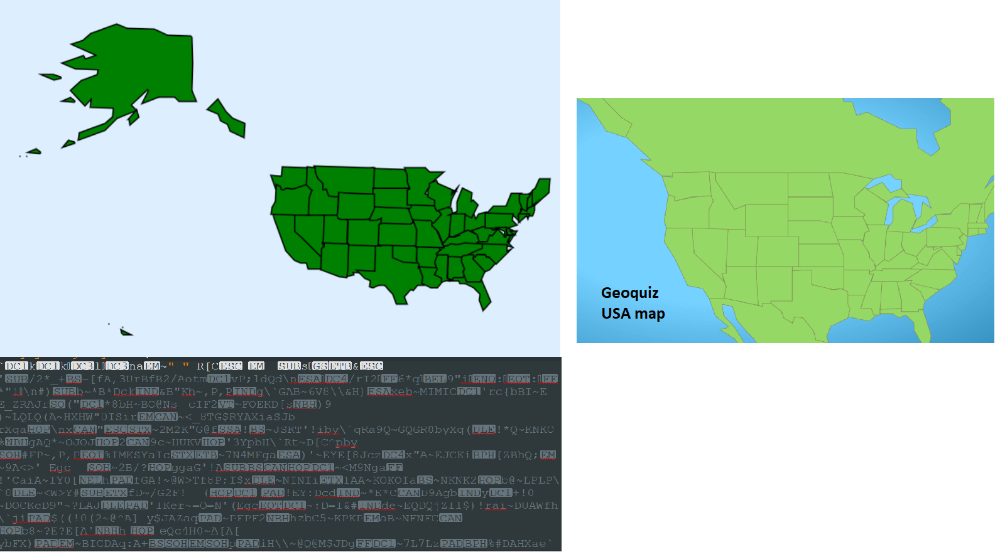
Then I redrew it two more times, with less and less points, to save as many bytes as possible, while keeping every US state recognizable (it can seem crazy but it's actually pretty fun to "golf" polygons!).
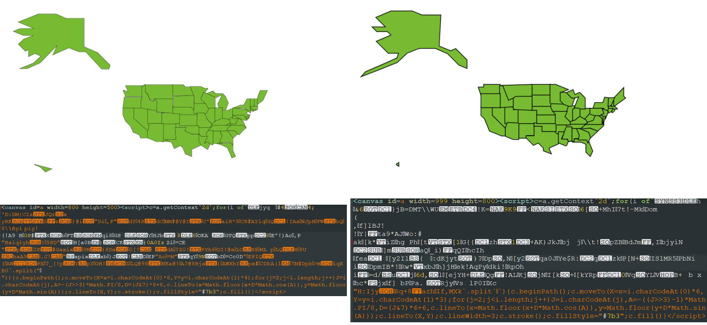
These iterations reduced the polygon data down to 439 and 416 bytes, respectively. (LIVE DEMO)
Thanks to @innovati and @alternative451 for their support and feedback during these tests!
I also updated my MiniMusic tool with the help of @d_nghia, but we'll talk about it later!
#js13k starts tomorrow!
— xem 🔵 (@MaximeEuziere) 12 août 2018
Time to update my 2017 tool MiniMusic!https://t.co/KeiphbXzXM
The editor now has a keyboard on the left, a functioning tempo field, and (FINALLY) no more "clicking noises" between each note, thanks to a new algorithm!
Thx @d_nghia for his help! pic.twitter.com/WTmSSNlmGw
At least, this update of MiniMusic was appreciated!
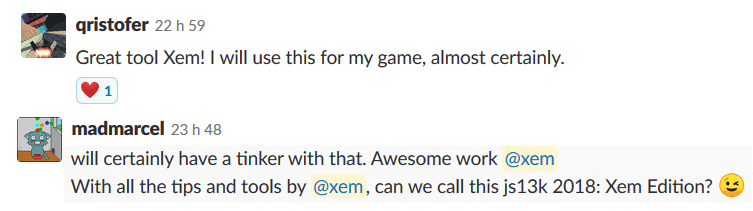
~~~
During the compo
I decided to use these new tracing techniques in a new Geoquiz game. A bigger and better game than the original!
Regarding the theme "offline", I'll try to do something involving being really offline to play the game.
So I put together a big world map by overlapping a public domain HD image showing all countries and capitals (the one I used for my Brazil test), and a map of the USA states ripped from Bing Maps... (because Google Maps replaced its Mercator projection with a goddamn 3D globe!):
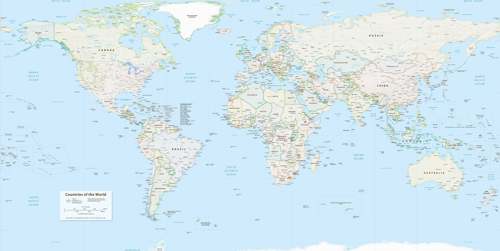
Download (8.6MB)
{kind=link}
I also made a big database of everything that I thought could be featured in the game:
- The 590 items already present in Geoquiz 1: Countries, Capitals, US states, US capitals and Famous places.
- 9 new datasets: Countries flags, Territories, Seas*, Lakes*, Streams*, Deserts*, Volcanoes*, Mountains* and Forests*
(*not all of them, just the biggest / most famous ones).
- And other sets that I didn't keep because they were less fun, too hard, or used too much extra space: Oceans, Continents, Cities, Tectonic plates, Oceanic trenches, Extreme points on Earth, Sovereign states flags / capitals, Disappeared countries (like USSR, Tchekoslovaquia or Zaïre), plus for each country: Main currency, Main language, Hymn, Name of inhabitants, Time zone, Current president/dictator, etc.
In total, the 14 sets I kept in the game represent 1124 questions (about twice the amount of questions present in Geoquiz!)... or 925 if we exclude flags. You can see each dataset in the entry's source code HERE. I also ordered each set by increasing difficulty (which is, of course, very subjective).
I edited my js13k-path tool to let me easily draw each item on the world map (stretched down to 2048x1024px), while avoiding all the chars that need to be escaped, and export everything as an array of numbers, ready to be fed to my other tool int2binary2html. You can try this editor HERE.

It took me a few days to find the right settings and to draw everything as optimized as possible, in order to fit in my budget (around 10.5kb for all the names and the map data, the rest will be used by the title screen, the game's code and the music.)
I first reused my USA map experiment from before the compo, but ended up redrawing all the countries to let them be nicely aligned with with Canada and Mexico (and with each other).
Anyway, here are the 199 countries, 50 US states and 52 other territories.
Total size: 12kb uncompressed, and 6.74kb zipped (including 2.99kb of names, capitols and country code used to produce emoji flags).
That's much better than Geoquiz's map, right?
Note: contrary to Geoquiz 1 , the World map and the US map are now drawn on the same screen, but with two different levels of detail in order to make the USA zoomable without losing too much quality.
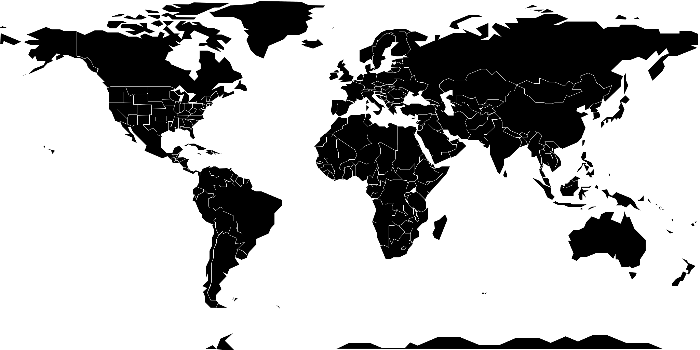
Fast-forward a few days of drawing, and here are the 26 lakes, 76 streams, 24 deserts, 19 forests, 25 volcanoes, 37 mountains and 95 famous places. (total size: 19.3kb uncompressed, and 10.0kb zipped! Pretty unbelievable!)
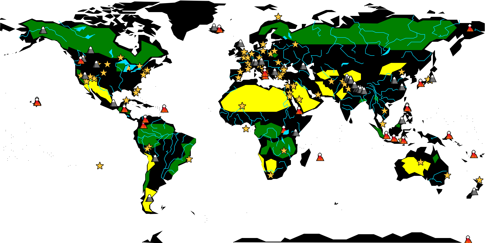
Here's all the data used to make this image, concatenated in the same text file. You can notice that all the names take more bytes than the actual paths (13kb vs 6.3kb), but they also compress much better, because words written with a 26-letter alphabet have much less entropy than random-ish bytes).

For the record, the streams data is nearly 1kb bigger than the US map's data!
But that's quite normal: streams use more points than US states on average, and there are 76 of them!
For the final dataset (the 77 seas) I decided to not draw them using polygons, but use circles instead, which allowed to encode each sea on 3 bytes (2 bytes for the center's X and Y, and 1 byte for the radius). The sea editor can be tested HERE.
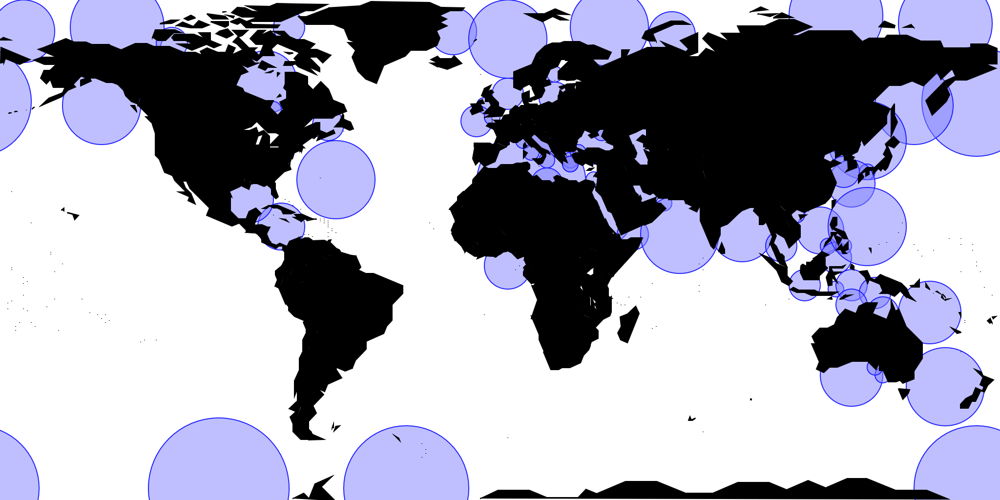
Total size (for the 14 datasets): 10.6kb zipped. Yay! That fits my data budget! (...give or take 100 bytes)
Organizing the data
The names of the items in each category are concatenated in CamelCase and retrieved using a regex. For example the places:
places = `Cape canaveralChrist the redeemerGreat wall of chinaSphinxEiffel towerPisa towerSagrada familiaBig ben...`.split(/(?=[A-Z])/)
// ["Cape canaveral", "Christ the redeemer", "Great wall of china", "Sphinx","Eiffel tower", "Pisa tower", "Sagrada familia", "Big ben", ...]The binary data is also concatenated.
When it represents fixed-size items like places (encoded on 2 bytes), it looks like this:
places_binary = `HacªÓN—]‚?ˆG‚K€9LMÓN...`.match(/.{2}/g);
// ["Ha", "cª", "ÓN", "—]", "‚?", "ˆG", "‚K", "€9", "LM", "ÓN", ...]When the data represents polygons (countries, US states, territories, forests, deserts or lakes), the "reserved" character (i.e. not present in the rest of the data) "DEL" (U+127) is used to separate islands, while ~ (U+126), also reserved, is used to separate items.
For items with capitals (countries and US states), the capital coordinates are placed at the beginning of each item. For example, the US states and capitals are encoded like this:
us_binary = `0X“P)~+=&
OOWMr
UsbW\n
a})>K9
;Zx
/PAHS8p~7X5Ur
+~9l:eKjzs +X=~:k:k},M~GrJpMm\n\n~\\}X}sa:2Q~WhYclY;0~]i[k*
ia~hghg(...`.split`~`,
// ["0X“P)", "+=&
OOWMr
UsbW↵
a})>K9
;Zx
/PAHS8p", "7X5Ur
+", "9l:eKjzs +X=", ":k:k},M", "GrJpMm↵↵", "\}X}sa:2Q", "WhYclY;0", "]i[k*
ia", "hghg(", ...]The second US state of this list (Alaska) is encoded like this:
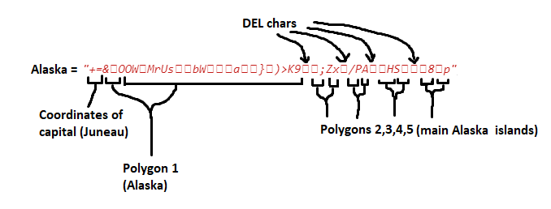
Now it's time to code!
Title screen
No rotating globe on the title screen this year (this globe took me too many bytes and hours in 2015).
Just a fixed screen and some emoji for the graphics.
For some reason, on Android, the game page needs to be reloaded in order to see the right font on the title screen.
This screen uses ~300bytes of code.
PS: in the source code HERE, all the emoji are escaped as HTML entities because the file is encoded in Latin-1, where only ASCII and 127 other latin chars are allowed.
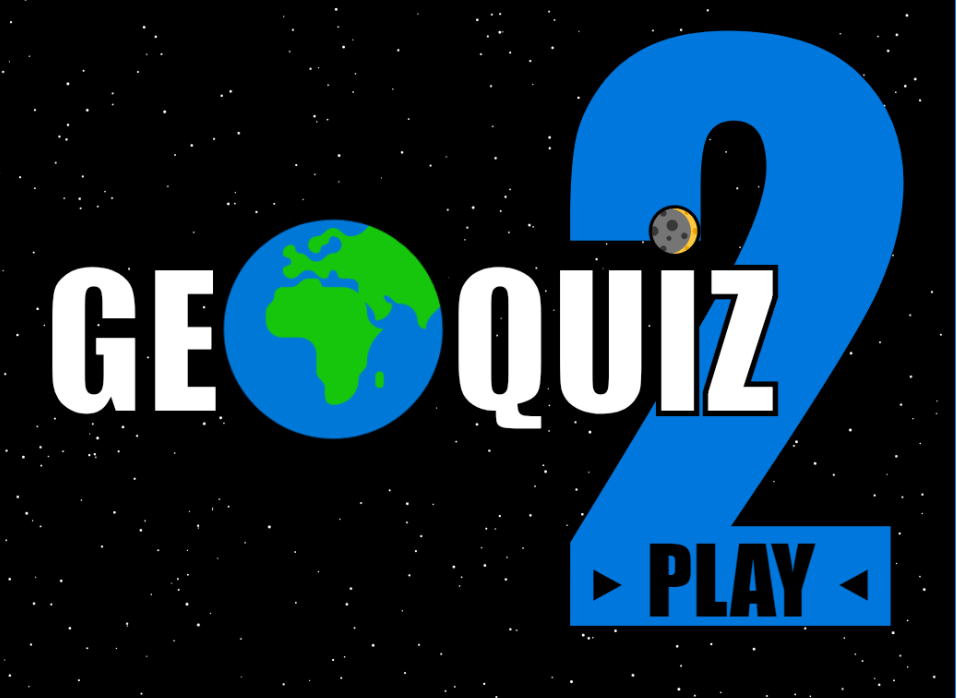
Responsive canvas
That feature was missing in the first game: a canvas that resizes depending on your screen size.
This is always boring to do because all mouse/finger coordinates have to be translated to canvas coordinates, which is not doable natively.
Here's the shortest coordinate converter I managed to do (for a 1024 x 768px canvas):
/* CSS */
canvas { max-width: calc(100vh * 1.35) }
Note: 1.35 is the canvas ratio: 1024/768.
Also, to save a few bytes, the max-width can be simplified to "135vh"!
/* JS */
xy = function(e){
w = a.offsetWidth;
// mobile
if(e.changedTouches){
x = e.changedTouches[0].pageX * 1024 / w;
y = e.changedTouches[0].pageY * 1024 / w;
}
// desktop
else{
x = e.pageX * 1024 / w;
y = e.pageY * 1024 / w;
}
}
onmouseup = function(e){
xy(); // saves the pointer coordinates in the vars x and y
}
The flags problem
It's 2018 and Windows 10 still has zero support for Emoji country flags, Linux may support them in some distros (but as far as I know, it doesn't), while MacOS, iOS and Android support them fine.
But this time, it won't stop me from adding a flags quiz in the game! At least, for the countries.
I negotiated with @end3r the right to live-load an emoji web font on OS's that don't support them, as long as the game can work without them and the player agrees.
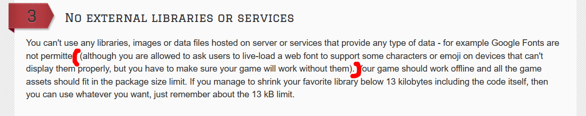
This authorization was almost a poisoned gift, because it took me almost two entire days to find a solution that works on Windows 10's Firefox, Chrome and Edge.
You can read the detail in these two Twitter threads:
Nightmare of the day (#js13k):
— xem 🔵 (@MaximeEuziere) 16 août 2018
I wanted to load a color emoji webfont, and draw emoji (especially flags but not only) on a canvas, on Windows browsers (because, of course, browsers can't display flags natively on Windows).
How hard could that be?
Thread 👇
Web font vs. emoji flags, day 2! #js13k
— xem 🔵 (@MaximeEuziere) 17 août 2018
(Day 1: https://t.co/KC6GH80wVd)
So if we load Twitter's twemoji.ttf and Google's NotoColorEmoji.ttf in cascade, we can display all 199 countries flags on Fx, and 198 flags on Chrome & Edge, because Noto doesn't include Kosovo's flag.
(1/n) pic.twitter.com/9BBk7DFK07
But I'm happy with the result: all 199 countries flags (except Kosovo, that has never been included in Google's Noto Emoji font) can appear in the game!
I also made a dedicated tool to load these emoji fonts and ask the player's agreement according to the rules, you can find it HERE. Long story short, on Windows and Linux, the fonts Twemoji and Noto Color Emoji are hosted on my Github repo and loaded like this:
/* CSS */
@font-face{font-family:f;src:url(//xem.github.io/geoquiz2/n.ttf),url(//xem.github.io/geoquiz2/t.ttf)}
/* JS */
if(WindowsorLinux){
body.style.fontFamily = `f`;
}
Game modes
In Geoquiz 1, there was only one game mode, 13 levels of increasing difficulty, with 10 questions and a 30,000km error counter in each level.
When the error counter reached 0, the game was over. This was nice, but it could also be quite frustrating because the last levels were pretty difficult to reach without restarting the game a few times.
This time, there won't be any levels. All the datasets will be accessible at the same time and picked randomly, while the difficulty will progressively increase.
Also, I'll let the player choose between two modes, the "Least error" mode similar to the first game, and the new "Highest score" mode where a list of questions is asked entirely, and at the end, the player receives a score.
Here's the menu flow so far (the visuals are not definitive):
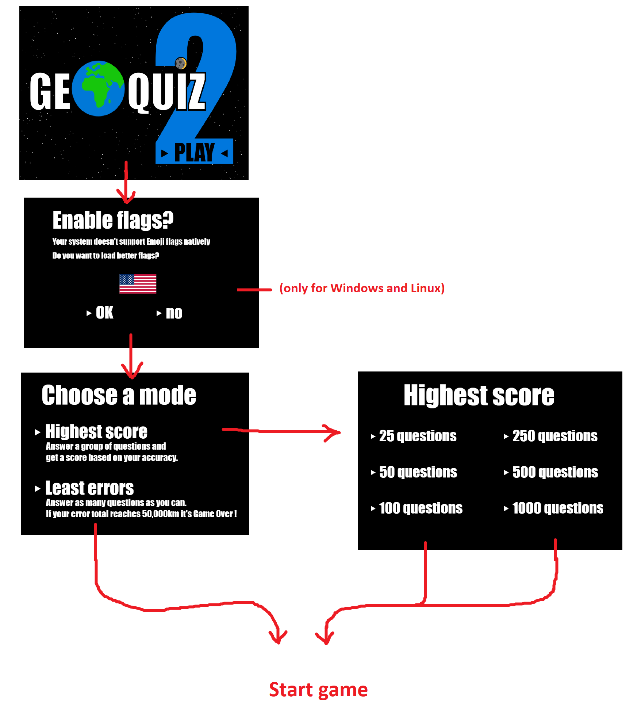
Size check n°1
Let's check if we're still on the 13kb track...
The code I've written so far use 1.9kb (minified and zipped)
And if I add all the data at the beginning of index.html, the total is 12.3kb!
Let's use the remaining space to ask the questions, draw the map(s), implement the gameplay, display the scores and play some music!
I'm not sure how I'll do it but it looks like every byte will count!
Questions
Picking and asking the questions to the player was much less easy than it sounds.
For the visuals, I went with a full black screen and a sentence stating the item category and its name.
If flags are enabled, they will be drawn as big emoji instead of writing a country name.
For the picking, the game always start with a country, a capital and a place (to avoid getting a weird question at the beginning of the game, then the category is chosen randomly, but with 3 restrictions:
1) There is a 30% chance to get a country, a capital or a place (the 3 biggest datasets) and 70% chance to get one of the 11 others sets.
2) As long as it's possible, the same category isn't picked twice in a row.
3) US states and capitals are not asked before the 20th question. These datasets are very hard for most players, and I decided to give them a bit of rest for the first questions.
All the sets are ordered by increasing difficulty, and all the questions are picked in the first 10 items not asked yet inside each dataset. The more you play, the harder it gets!
Here's a video showing the 1123 questions present in Geoquiz 2. (visuals are not final)
Many tests and adjustments were necessary to ensure that there is always something to ask, and that no question is asked twice... however the same country can appear many times during a game: by its name, by its capital and by its flag. I suppose it won't matter very much given all the data and all the randomness there is.
I also had to convert ASCII country codes like "US" into Flag emoji and make sure that all the long names get written on two lines, which is never easy on a JS canvas (we can't use \r, \n or <br>, we have to cut the string in two parts and call fillText() twice with different Y coordinates...
To split the names on two lines, I first used this regex:
nameparts = itemname.match(/.{1,15}( |$)/g);The first line could take as long 1 to 15 chars + 1 space or 1 end-of-string, and the second line (if any) could take the remaining 1-15 chars + 1 end-of-string.
It worked fine, until the volcano Eyjafjallajokull popped up in the game. As there are no spaces, the regex only took the 15 last chars + the end-of-string, and the initial "E" was lost.
After a bit of thinking, I fixed it by replacing the 15 with a 16 in the regex. Good enough!
World map
Here, I ran into a very weird and unexpected bug:
In my map editor, I drew the World map on a 2048*1024px canvas.
Though, in the game, I want to trace the map scaled down by a factor of 2, i.e. on a 1024*512px canvas (this is important in order to have better performance on slow PCs and mobiles), so I applied a "*.5" coefficient to every polygon's start coordinates and every polygon's distance between two points.
Pretty basic, eh? But this happened:
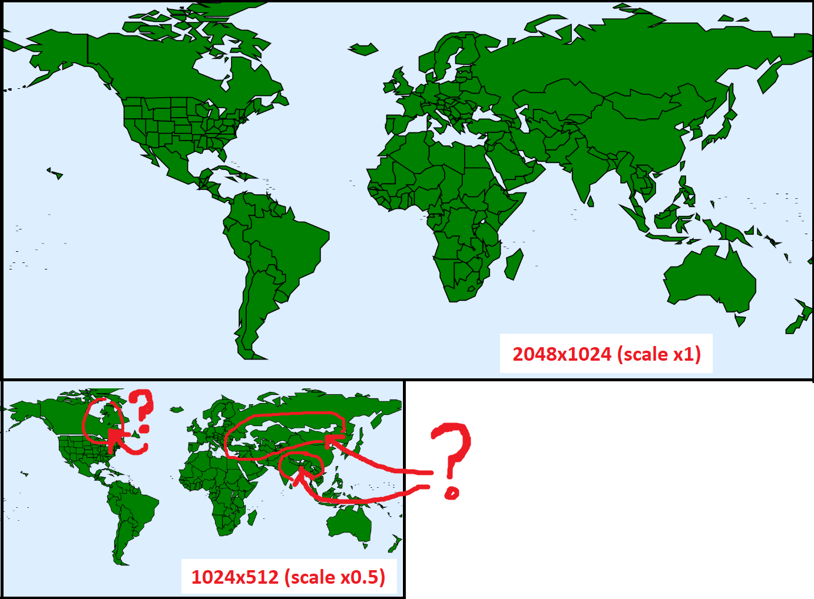
These big holes appeared around some countries (especially on the right of the map), and some islands of Canada moved in crazy places, sometimes inland!
After an afternoon of debugging, I discovered that this was not exactly an error in my code.
All these problems were caused by JS floating-point errors piling up, getting bigger, point after point, when I divided each offset by 2.
The more points a polygon had, the more distorted it became, and that's why the problem is more visible in Canada, Russia and Asia (these countries are very large).
I thought I was condemned to render my game on a huge canvas, then it hit me!
Instead of dividing every offset by 2 inside the coordinates computation like this:
// Draw a polygon with a 0.5 scale (buggy)
c.beginPath();
c.moveTo(x = startX/2, y = startY/2);
for(i in points){
c.lineTo(
x = x + points[i].distance/2 * Math.cos(points[i].angle),
y = y + points[i].distance/2 * Math.sin(points[i].angle)
);
}
c.closePath();
The trick is to compute every point of the polygon as if it was in normal size, and only perform the downscale inside the moveTo() and lineTo() calls.
// Draw a polygon with a 0.5 scale (fixed)
c.beginPath();
x = startX;
y = startY;
c.moveTo(x/2, y/2);
for(i in points){
x = x + points[i].distance * Math.cos(points[i].angle);
y = y + points[i].distance * Math.sin(points[i].angle);
c.lineTo(x/2, y/2);
}
c.closePath();
The difference is very subtle, but it's enough to fix everything! Oof!
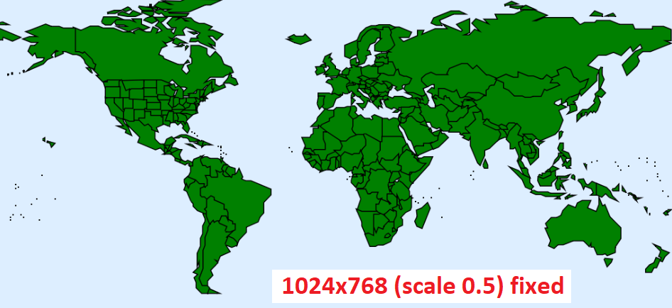
After a couple days where I fixed some encoding issues and wrote a generic tracer for every kind of polygon in the game, I finally obtained this map, by layering a radial gradient background, the countries (in green - or white in the poles), the lakes (in blue), the forests (in transparent black), the deserts (in transparent white), and the streams (in blue, with a 0.5px line width).
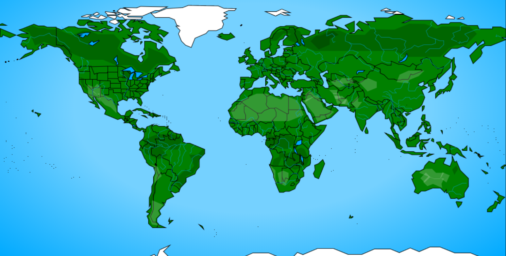
Deserts, forests and streams aren't entirely opaque to allow seeing the borders of all the countries below them.
The problem is that there are two forests that overlap (in Russia), and many deserts that overlap each other (in Australia, Asia and America). I'll redraw the deserts without overlaps during the final adjustments.
Size check n°2
The zip is now 13.2kb.
Time to start worrying about my byte budget...
It's the first time I have such a hard byte budget for a #js13k game!
— xem 🔵 (@MaximeEuziere) 18 août 2018
Data: more than 1100 items, ~10.5kb zipped
Music: ~400b zipped
Title screen: ~400b zipped
Menus/final score: ~500b zipped
HTML+CSS: ~300b zipped
Quiz/map/gameplay: ~900b zipped
Why do I do this to myself? 😩
I spent almost a full week-end rewriting all my code as clean, simplified and optimized as possible. Didn't touch the data.
I also made all my JS vars local (by embedding all my code in a big onload() function) so they could be renamed by the minifier
As a result, the zip fell to 12.3kb! Let's go for the final sprint!
Gameplay
The gameplay is the same for all the questions: the players click a place on the map, and see the distance between their click and the right answer.
I've improved this part compared to Geoquiz 1: now the distance is also measured offscreen! As shown in this image, the error is measured by taking into account the Earth's curvature, and the dotted line doesn't have to go all the way through America and Africa to reach Australia.
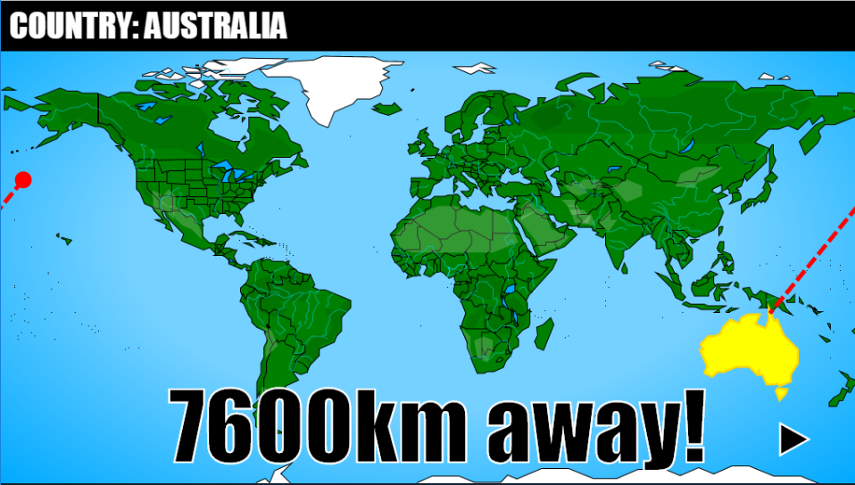
Like in the first edition, a bunch of code was necessary to compute the shortest path from the click coordinates to each polygon (especially with this new "offscreen" measurement), and I had to add a special case for the seas (encoded as circles, and highlighted underneath the countries and islands).
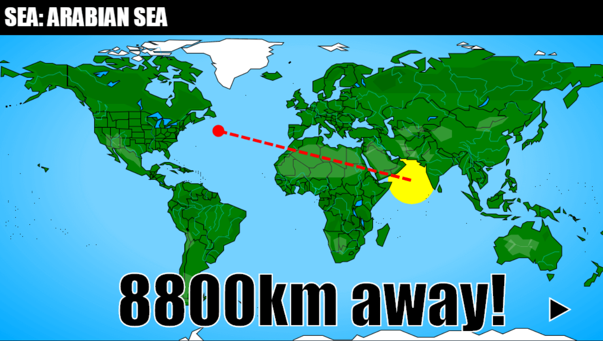
Also, when a question is about an US state or capital, the map is zoomed on the USA.
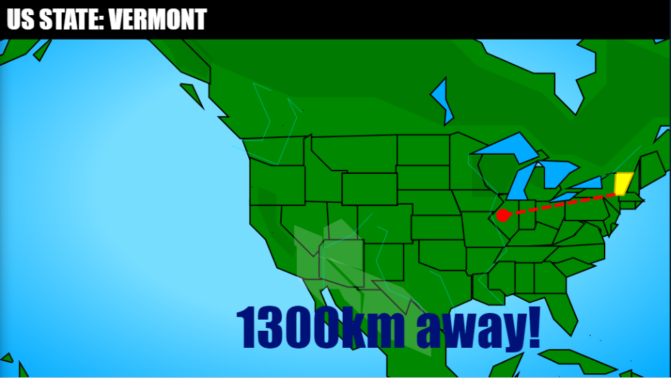
There will be no upside-down maps this year. I had done that to respect the 2015 theme "reversed", and I thought it was original, but it was annoying for most players. But from time to time, the map will become black, to hide the borders and add a bit of challenge.
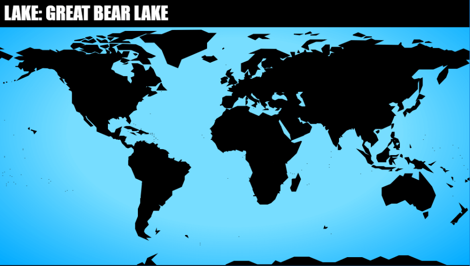
Score
The score screen is very simple, due to the tiny remaining byte budget.
In "high score" mode, every question receives a note on 100 (100% - 1% every second lost - 1% every 100km of error) and the mean of all notes is displayed.
In "minimum errors" mode, the score is the number of questions answered before reaching 50,000km.
The "share" button redirects on a dedicated page on my Github
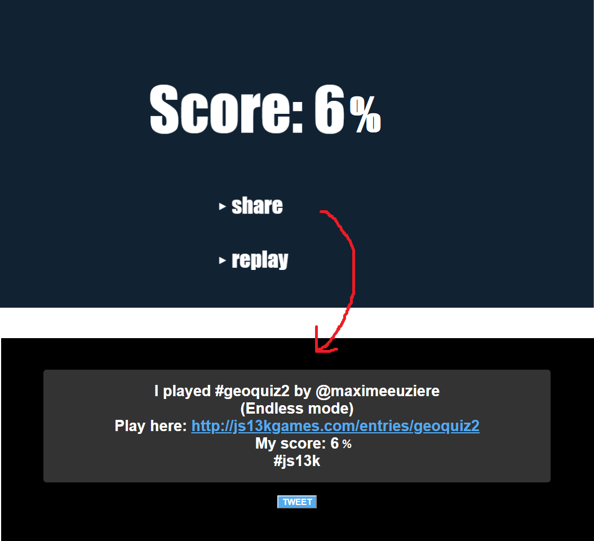
Music
I spent all this development with a single music in my head, almost 24h/24: Animaniacs - Yakko's World
So I naturally decided to use it in the game... so it gets stuck in YOUR heads too!
My musician friend Nghia drew the recurring part of the melody (plus the transition) inside my newly updated MiniMusic tool.
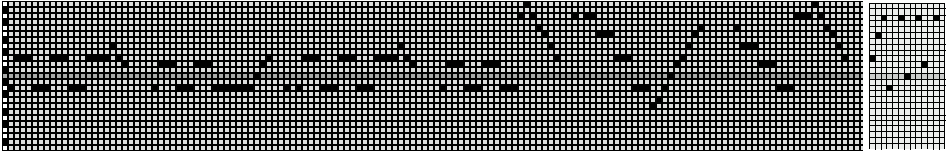
The output code was pretty light, around 450 bytes.
Though, most of the size was used by an array of little numbers... A-HA! Are you thinking what I'm thinking?
I put these numbers inside int2binary2html and ended up having all the melody fitting in this little function.
music = function(){
var audio = new AudioContext,
gain = audio.createGain(),
note,
notes,
oscillator;
for(note in notes = `\n\n\n\n\n\n\n\n\n\n\n
cccc
\r
\nccc\n\n\n\n\n\n\n\n\n\n\n
cccc
\nccc\n\n\n\r
\nccc
\nc\rc
c`){
oscillator = audio.createOscillator(),
oscillator.connect(gain),
gain.connect(audio.destination);
oscillator.start(note * .2);
oscillator.frequency.setValueAtTime(415 * 1.06 ** (13 - notes.charCodeAt(note)), note * .2),
gain.gain.setValueAtTime(.5, note * .2);
gain.gain.setTargetAtTime(.001, note * .2 + .18, .005)
oscillator.stop(note * .2 + .19);
}
}
(The string "notes" contains a lot of non-printable chars. It's actually 150 chars long)
Played in an infinite loop, this music only added 204 bytes into the game's zip! I can't afford a lot of free space, but I can definitely free up 204 bytes for an entire music!
Here's an experiment where the theme gets is played a little higher and a little faster after the end of the loop. It sounded nice, but I didn't know how to keep it playing long enough without getting too high or too fast, so I didn't keep it.
Golfing
After taking care of all the little details and cross-browser issues, the zip reached 14.1kb.
I spent another day golfing all my code and removing every superfluous text and decoration.
I also simplified many items names ("Czech republic" => "Czechia", "The pyramids of Giza" => "Giza pyramids", etc.)
Finally, as suggested on slack, I switched from babelJS to Uglify-ES to minify my JS code, which saved me a little more than 200 bytes before gzip.
At the end of the first week of the compo, the game's code was complete, golfed, minified, and there were "just" 855 bytes to cut in order to make the zip pass the 13kb barrier.
For the record, the 199 countries and their capitals use 3218 bytes of binary data, so about 16 bytes per country.
Similarly, each US state and its capital take about 559/50 = 11 bytes, each territory about 284/50 = 6 bytes, each stream about 781/76 = 10 bytes, and each desert/forest about 8 bytes, while all the other datasets have a fixed amount of bytes per item (places, volcanoes, mountains: 2 bytes, seas: 3 bytes)
I took the (difficult) decision to redraw all the polygons of the game with a little less points.
First, the streams
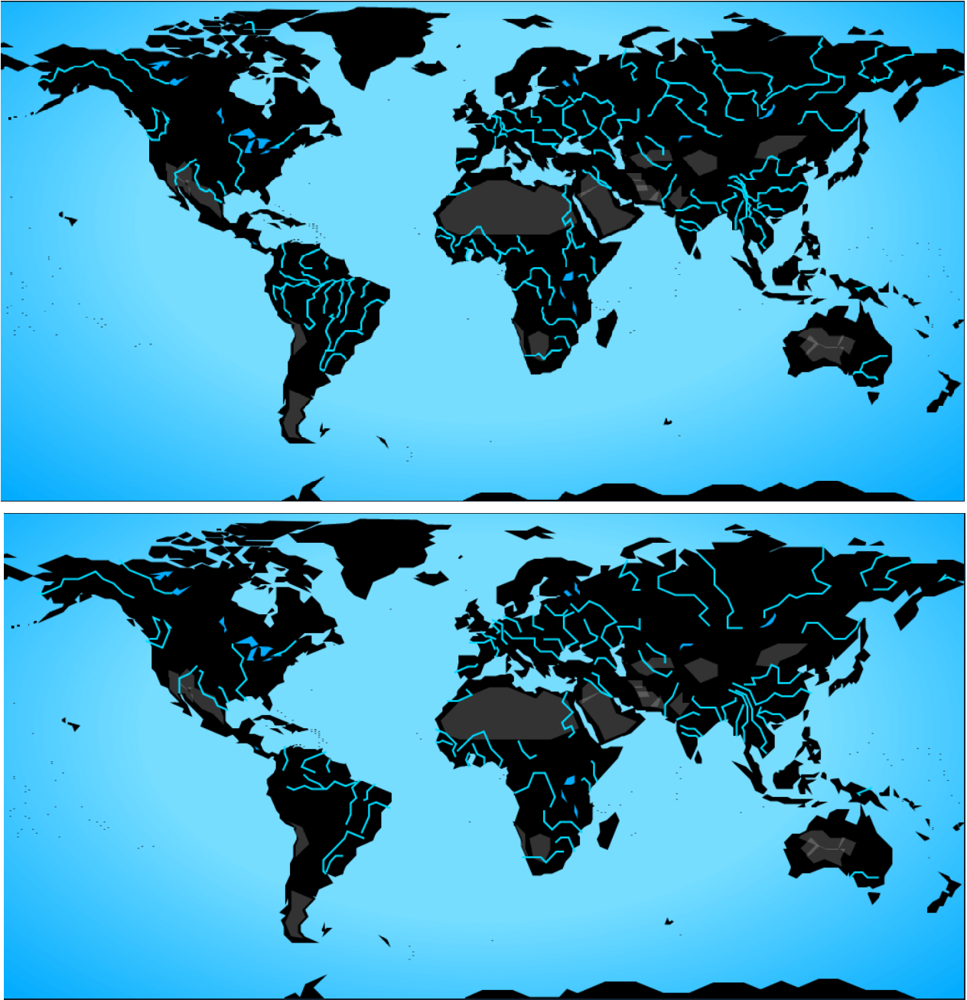So, with the music my zip is 855 bytes too large and the code can't be compressed any more.
— xem 🔵 (@MaximeEuziere) 21 août 2018
It's time to use less data!
First, I let's re-trace all the streams with less details and without their affluents.
259 bytes saved! 596 to go.#js13k pic.twitter.com/Htrm0ANxhY
Then, all the countries!
These extra bytes won't go away alone.
— xem 🔵 (@MaximeEuziere) 21 août 2018
I'm redrawing the entire World map, again.
I call this "polygon golfing": the goal is to make a country polygon use less points, but keep it highly recognizable.
Sometimes, they even look better with less points!#js13k pic.twitter.com/kZJCCfv4AB
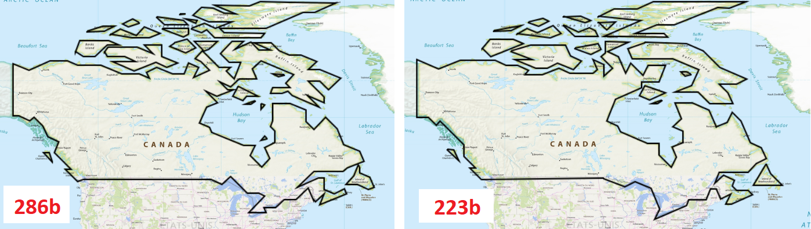
This tweet was liked by Notch himself! OMG.
#js13k polygon golfing:
— xem 🔵 (@MaximeEuziere) 22 août 2018
- 199 countries redrawn
- 554 bytes saved
- Not really degraded visually
- The zip now weighs 13kb + 223 bytes
🤞 pic.twitter.com/QwpiCuuDvi
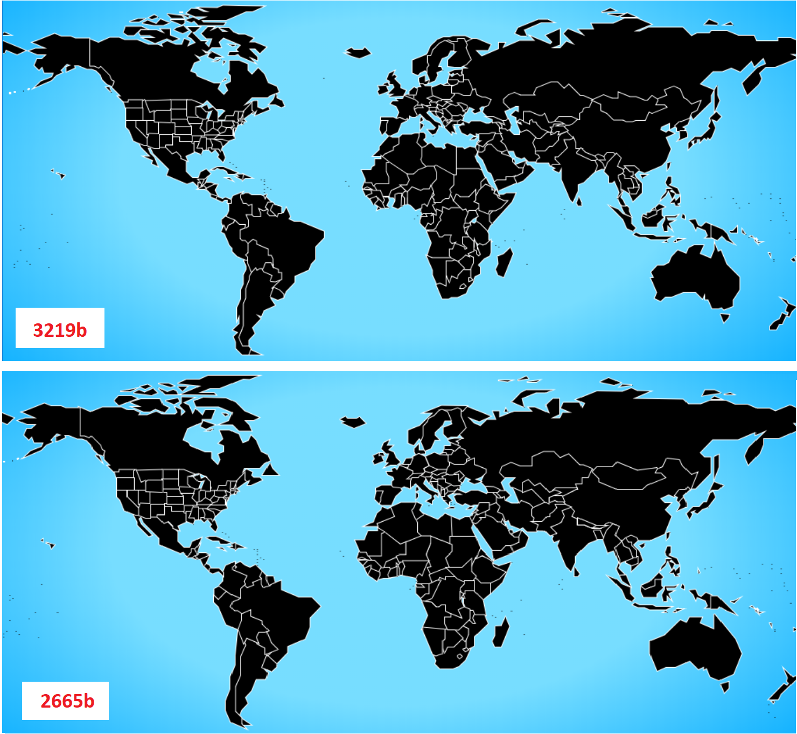
(I also saved a lot of bytes by not drawing the USA as a country, but instead, considering all the USA dataset as the answer to the question "USA") 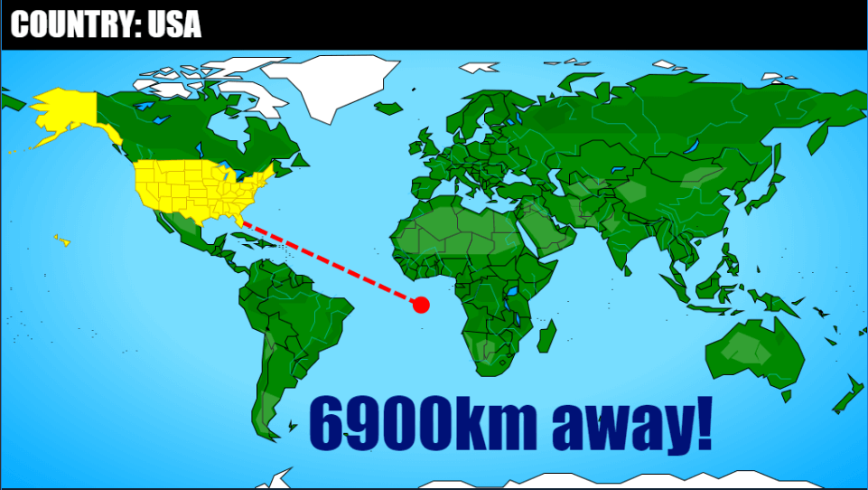
Then the territories...
After redrawing all the territories (like Greenland) and the deserts, the zip finally passed below 13kb, without having to remove any of the 1123 questions of the game!
— xem 🔵 (@MaximeEuziere) 22 août 2018
Let's use the extra 19 bytes for a final mini feature!#js13k pic.twitter.com/WZuIYvPDUC
At this point, the zip was finally below 13kb. But the first beta testers requested some extra features, so I also re-drew all the USA (a fifth time!)
In the meantime, I re-drew all the USA map, with better borders and more accuracy on the west coast, and somehow 35 bytes smaller!#js13k pic.twitter.com/7jgfZbthNx
— xem 🔵 (@MaximeEuziere) 22 août 2018
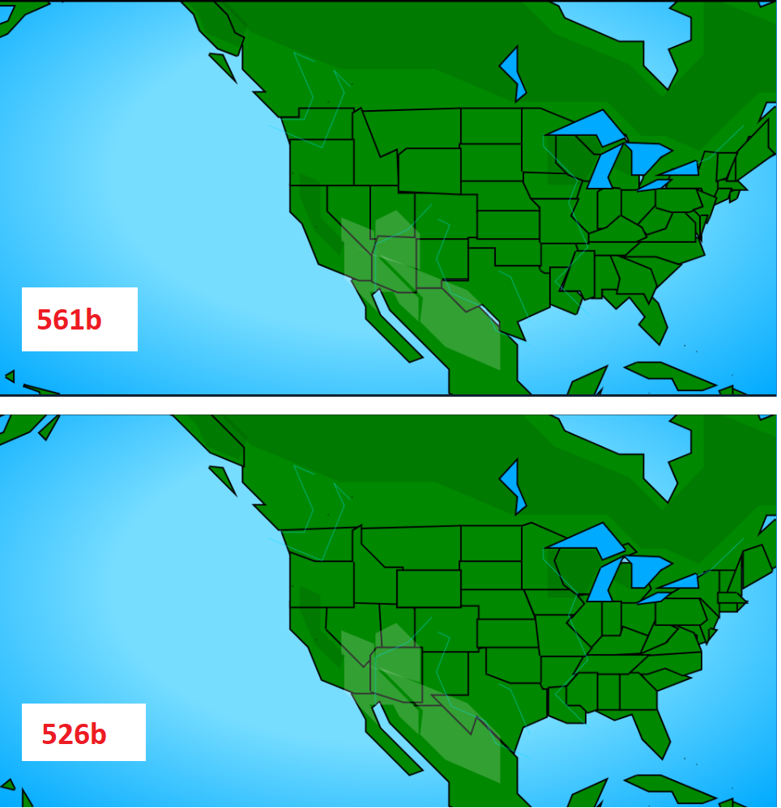
The big latin-1 fright
I pushed my game on Github to let some testers try it, and they sent me this screenshot:

All the map was broken! At first I thought it only happened on MacOS, but when I visited the same URL on Windows I had the same problem. Whaaaaat?!
Turns out, my HTML page contains a "<meta charset=iso-8859-1>" to "force" the content to be parsed as latin-1, and this works fine locally. But Github pages enforces UTF-8 parsing through HTTP headers, and HTTP headers are stronger than the charset meta tag.
If it's read as an UTF-8 string, almost all my data is corrupted! I was really panicked at this moment.
But End3r kindly agreed to upload my game on js13kgames' server so we could see if it enforced UTF-8 too, and by chance, it didn't! Oof again!
Last minute features
My testers mainly asked two things: they wanted less clicks between the questions, and they wanted me to reintroduce a time limit for each question, like in the first game.
I solved both problems by introducing a little game loop in the game. This loop executes 30 times per second and only acts under certain conditions, to avoid forcing on the CPU.
On the map screen, it decrements a 20-second timer and shows a progress bar.
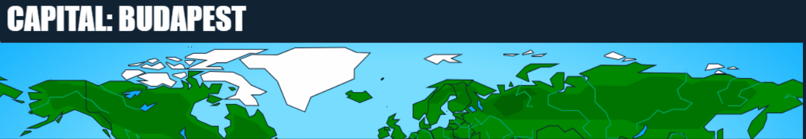
Geoquiz 1 was super slow on mobile because all the map was redrawn at each frame. I avoided it this time:
At each frame, a new yellow rectangle is drawn on top of the last one, so the whole screen - including the map - doesn't need to be re-rendered every time
And on the feedback screen, another 3-second timer is used to move automatically to the next question.
The final bytes
After another day of golfing, I was just 16 bytes over the budget, and had no more ideas to make everything fit.
I decided to remove 3 hard questions from the game:
After an intense golfing session, I finally managed to add a time limit, automatic screen transitions and many other enhancements in 13kb+16b.
— xem 🔵 (@MaximeEuziere) 25 août 2018
I removed 3 (too hard) questions to reduce it to exactly 13kb.
So... Geoquiz 2 will have 1120 questions instead of 1123! 🤷♂️#js13k pic.twitter.com/2KQcAt8QFc
... and release it like that, at the middle of the jam.
(A mini-update was released a bit later, to fix some typos and better cross-browser support).
Some interesting numbers
In its final version, Geoquiz 2 represents:
- 13 days of development (half the dev time of Geoquiz 1, even though it's twice bigger)
- Only one, 1230-line commented source file.
- 33kb of raw data (before binary packing and names concatenation)
- Before gzip: 4948 bytes of map data, 9911 bytes of items names, 431 bytes of HTML/CSS and 6403 bytes of JS code. (total: 21.9kb)
- 14.0kb zipped
- 13kb + 10 bytes after using Advzip with the default settings
- 13.00kb after using Advzip with 100000 passes (the process takes several minutes)
How about the theme?
To respect the theme "offline", I kinda made an "offline" version of my game by drawing and painting a World map on my room's wall.
I know it's very late, but as promised in my #js13k 2018 making-of, my game #Geoquiz2 has sort of an offline version, in my bedroom ! 🗺️
— xem 🔵 (@MaximeEuziere) 29 septembre 2018
This is just the continents outline, but two black markers have died in the process. Colors soon !
(I foired Indonesia & Australia 😩) pic.twitter.com/qZXEeD1DNS
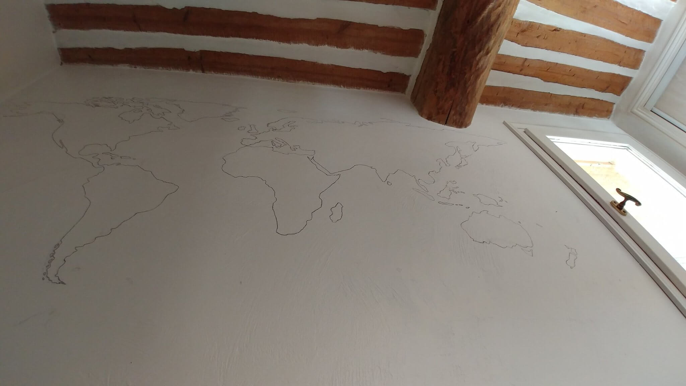
Envelope
A friend of mine, Olivier wanted to remake envelope (trailer), an iPad puzzle game he created in 2012, which is no longer present on the App Store.
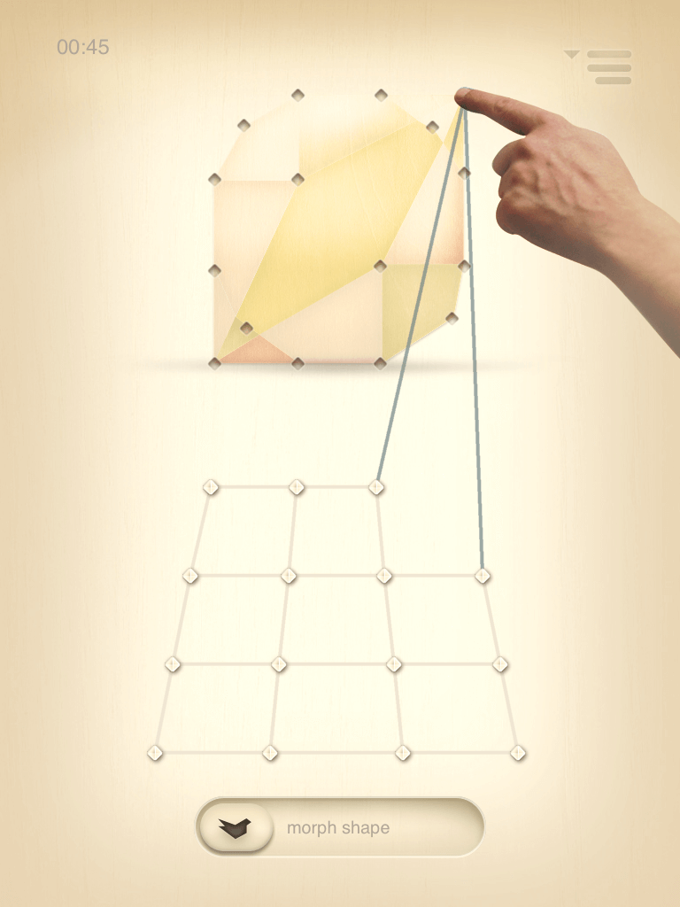
We had successfully prototyped it earlier this year...
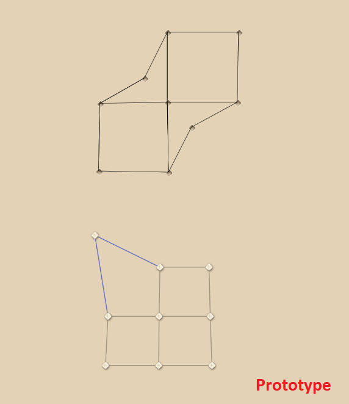
... but didn't go any further.
Time to reboot it, in JS and in 13k!
The gameplay consists in modeling a network of lines to match a shape, so it fits the theme pretty well.
By the way, the original game had more than 50 levels, but this entry will be a free demo for an App Store re-release, and will only contain a selection of 12 levels.
The assets
First, I wondered how I could imitate a wood texture within 13kb (for the game's background and shapes).
Procedural generation? Maybe, but that would take a lot of time.
Vector images? The best free svg wood textures I found online are these ones (12kb each):
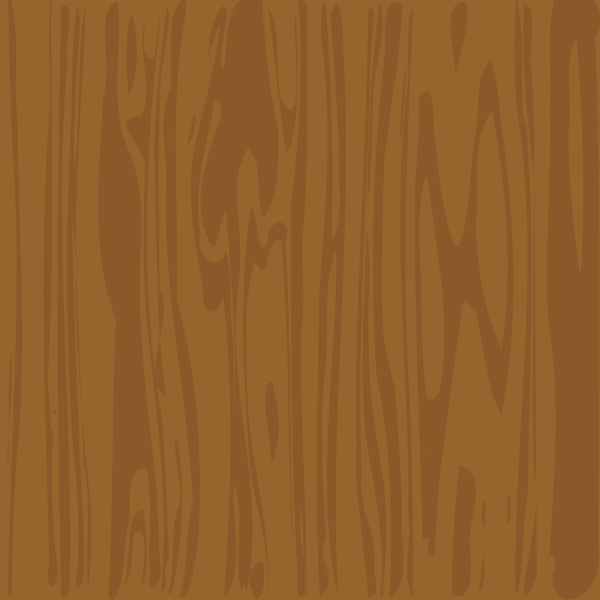 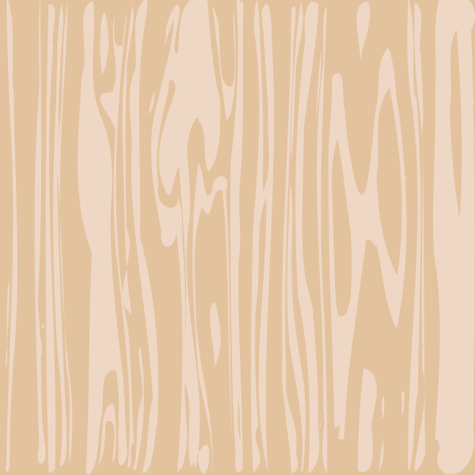
They're basically the same but with two different pairs of colors (#96642c + #8c5829 and #76440c + #6c3809)
So I wondered if I could generate SVG images on-the-fly with custom palettes, which lead to the creation of this tool: SVGenerator.
My game will use a SVG image, but it needs it to be drawn with different colors.
— xem 🔵 (@MaximeEuziere) 26 août 2018
I can't recolor it with CSS "fill" because I want to trace this SVG on a canvas, so it needs to be in an <img> tag.
So I made a little tool to generate it on-the-fly:https://t.co/nnttYF1R2Q#js13k pic.twitter.com/hPbtuzBFBh
I also tried to make this SVG smaller, by removing all the unnecessary tags and by rounding all the floating-point numbers present inside.
Before (12kb, 6.15kb zipped) - After (7.8kb, 2.74kb zipped)
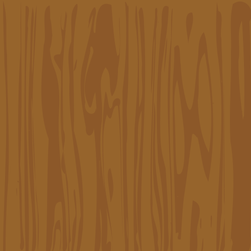
The difference is pretty much invisible!
Next challenge: use this generic texture as a background, and as a text / shape texture on a canvas.
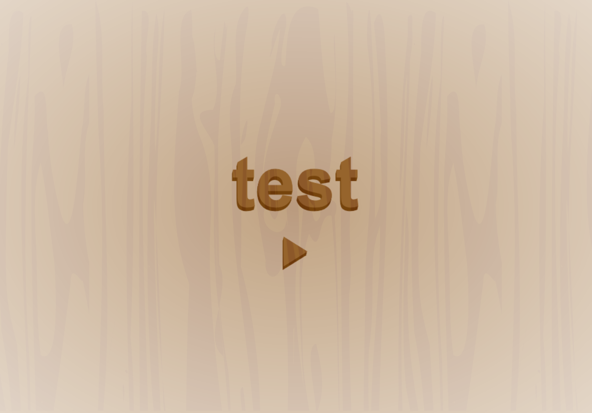
The background uses the clear palette plus a white radial-gradient, and the text and triangle are drawn four times, with little offsets, to represent depth (3 times with the dark palette, and once with the clear palette.)
Very few code was necessary:
w = new Image();
c = a.getContext("2d");
w2 = new Image();
w.src = "data:image/svg+xml;base64," + btoa(makewood("#96642c", "#8c5829")); // light palette
w2.src = "data:image/svg+xml;base64," + btoa(makewood("#76440c", "#6c3809")); // dark palette
w2.onload = function() {
draw(w2,-.5,2); // params: image, x offset, y offset
draw(w2,-1,4);
draw(w2,-1.5,6);
draw(w,0,0);
a.style.background = "radial-gradient(rgba(255,255,255,.3), rgba(255,255,255,1) 170%) repeat center center, url('data:image/svg+xml;base64," + btoa(makewood("#96642c", "#8c5829")) + "') repeat center top";
a.style.backgroundSize = "99vw 99vh, auto 99vh";
}
function draw(w,xo,yo) {
c.font = "bold 120px arial";
pattern = c.createPattern(w,"");
c.fillStyle = pattern
c.textAlign = 'center';
var x = a.width / 2;
var y = a.height / 2;
c.fillText("test", x+xo, y+yo);
c.beginPath();
c.moveTo(x-20+xo, y+50+yo);
c.lineTo(x+20+xo, y+75+yo);
c.lineTo(x-20+xo, y+100+yo);
c.fill();
}Then I tried to rotate the text/triangle texture and discovered a Firefox bug: fill() supports rotated textures but fillText() doesn't!
Is there a JS canvas/SVG expert around here?
— xem 🔵 (@MaximeEuziere) 26 août 2018
I'm trying to create a pattern from an image, rotate it, and use it to fill some text and a triangle.
It works on @googlechrome, but on @Firefox the text texture refuses to rotate... ??!
Demo: https://t.co/B7jYay1erD
cc @subzey#js13k pic.twitter.com/lTBv6jrKYG
It's a bug :(
— 𝔣𝔩𝔞𝔨𝔦 (@slsoftworks) 26 août 2018
Just filed as https://t.co/S7aZ7T3rOD
For the game's sounds, I recompressed a little mp3 file to play after each puzzle solving (3.26kb)